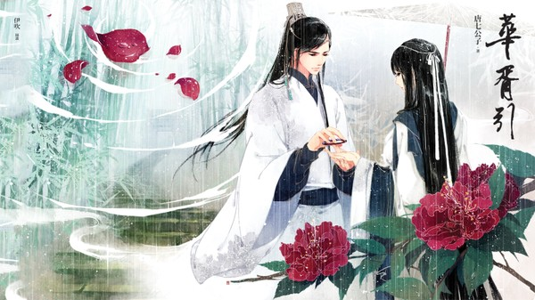

心之逆旅，华胥为引
若用生命换一个过往完美的幻境，你可否答应？
对某些人而言，世界的倾塌只需要那么轻轻一句话，无奈痛苦的现实，难以承受的痛，不如只求在梦中得到一个圆满。
以命易梦，轻叹悲欢离合一场戏，黄梁之后，尚剩几何？
华胥一引，乱世成殇。

这是一个发生在乱世的奇幻故事。城破之日，叶蓁以身殉国，依靠鲛珠死而复生时，她只是一个“轻若尘埃，一拂即逝”的君禹山君拂。而他两年后再次与她相遇时,用的也不是陈国世子苏誉的身份，他只是一个被她救下的蓝衣公子。当她弹起华胥调，便生死人肉白骨，探入梦境与回忆。
幻术构成的曲谱里，尽是人世的辛酸与苦涩。而她与他一次一次于幻境中相遇，身份两重，缘也两重。清平华胥调，能不能让每个人追回旧日的思念，不再悲伤？